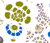

Souslesens NLP Demos
Open source apps for search, thesaurus and ontology manipulation and corpus annotation
based on elasticSearch search engine, Spacy NLP library , Virtuoso RDF datbase, Visj graph vis library , Node js
License : MIT
contact : claude.fauconnet@gmail.com
cherche et visualise les concepts dans différents thesaurus et ontologies
Permet de visualiser l'arborescence des theasurus et de comparer les concepts d'une branches avec les concepts des autres thesaurus
Permet l'evaluation/curation d'un thesaurus par partitionnement des concepts selon les catégories d'un corpus métier( Wiki)
navigation dans un corpus annoté par un thesaurus
A partir d'une ontologie métier (NPD) un portail d'accès aux données